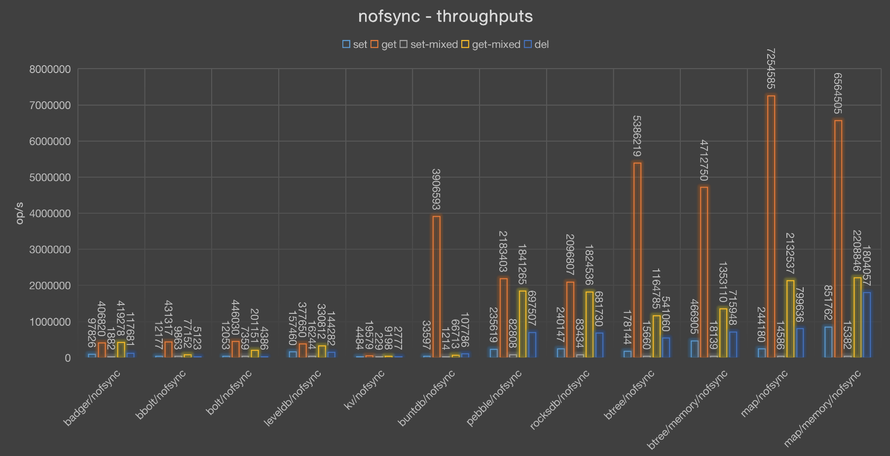
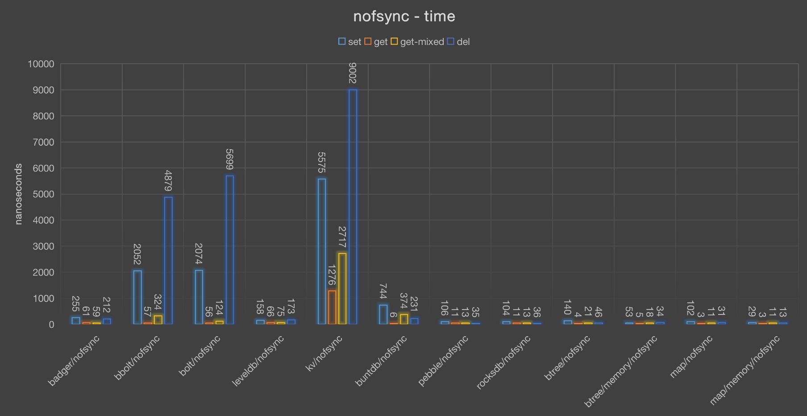
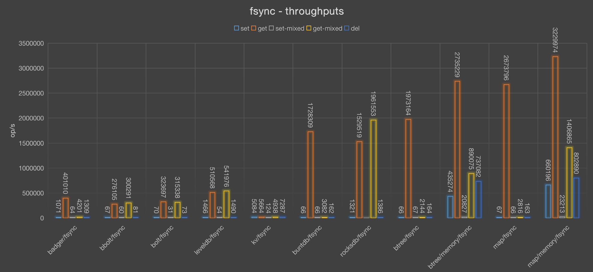
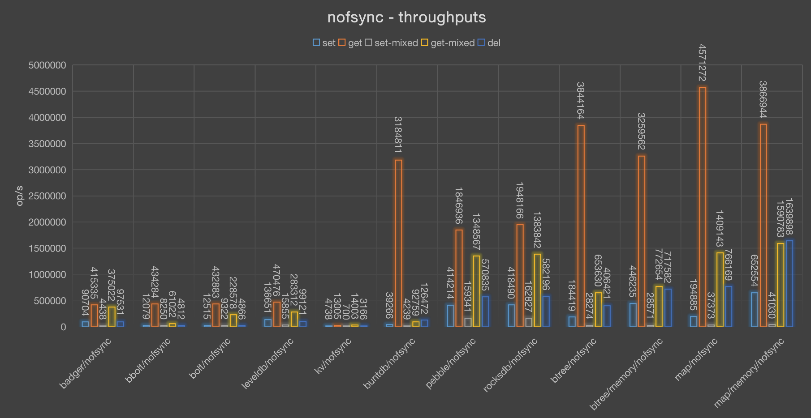
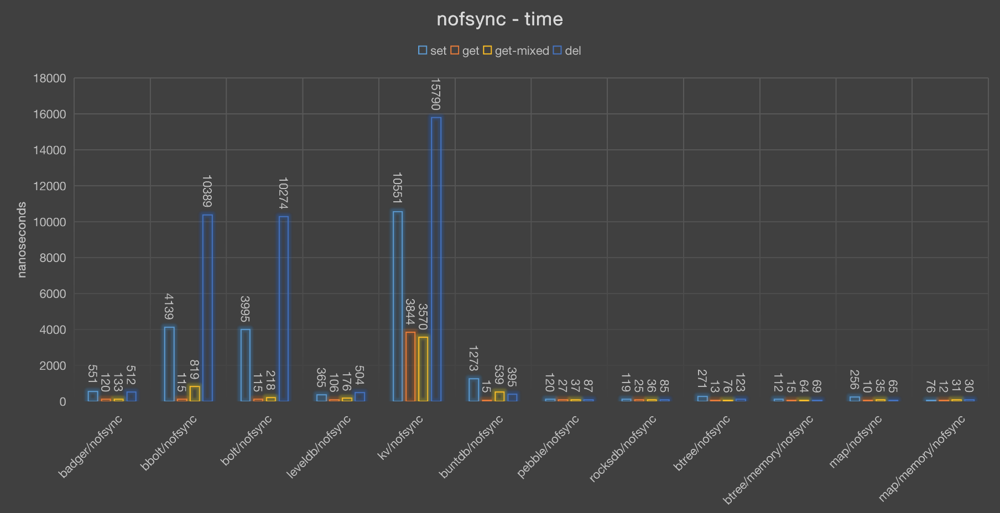
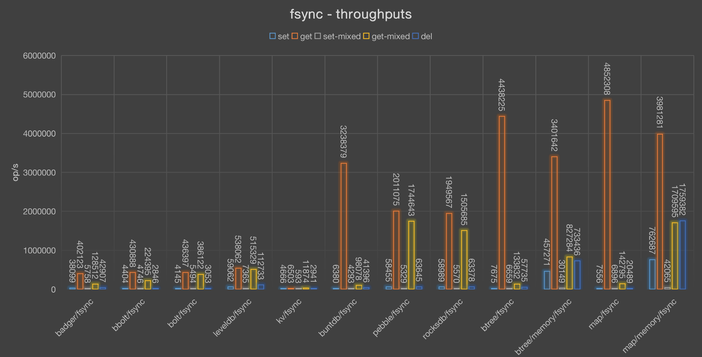

Go生态圈有好几个K/V数据库，我们经常用它来做我们的存储引擎，但是这些数据库引擎的性能如何呢？本文试图用性能而不是功能的数据考察这些数据库，我测试了几种场景： 并发写、并发读、单一写并发读、并发删除，得出了一些有趣的数据。
测试在两台机器上测试的，一台机械硬盘，一台固态硬盘，使用256字节作为value值的大小，9个字节作为key的大小，测试简单的读写删除操作，并没有测试批量读写操作。 每个测试case测试1分钟。
代码: kvbench
K/V 数据库
- Rocksdb: RocksDB是Facebook维护的高性能的嵌入式K/V数据库。它是LevelDB的克隆版，针对多核、SSD做了很多优化。 LSM tree数据结构。
- badger: 一个纯Go实现的快速的嵌入式K/V数据库，针对LSM tree做了优化，在某些情况下可以取得比较好的性能。
- goleveldb: leveldb的纯Go实现，非Google的C++版本
- bolt: 一个广泛使用的K/V数据库，基本上不会有新的功能加入了。
- bbolt: coreos的bolt克隆版，继续维护和扩展bolt的功能。
- buntdb: 一个基于内存的K/V数据库，也可以落盘。
- cznic/kv： 基本上不维护了。
- pebble: 一个性能优异的K/V数据库。
- map (in-memory) with AOF persistence: 基于map数据结构的数据库。
- btree (in-memory) with AOF persistence: 基于btree数据结构的数据库。
btree使用btree的数据结构，如果文件路径为:memory:,则直接写内存，而不会存于硬盘文件中。fsync为true是会同步硬盘文件。map使用map的数据结构，如果文件路径为:memory:,则直接写内存，而不会存于硬盘文件中。fsync为true是会同步硬盘文件。
当然，除了基本的K/V操作外，有些数据库还加入了事务、bucket(Column Families)等额外的功能，这也是选型的时候要考虑的一个重要方面。
查看硬件环境
查看磁盘情况：fdisk -l
查看磁盘型号：smartctl -a /dev/sda
下面两个命令不太准， 都显示1:cat /sys/block/sda/queue/rotationallsblk -d -o name,rota
使用MegaCli工具:/opt/MegaRAID/MegaCli/MegaCli64 -ldpdinfo -aall |grep 'Media Type'
机械硬盘
硬盘是希捷的机械硬盘：
|
|
2客CPU, 20个物理 CPU core， 开了超线程40个逻辑 CPU core。
32G内存。
不写盘(nofsync)
throughputs
| badger | bbolt | bolt | leveldb | kv | buntdb | rocksdb | btree | btree/memory | map | map/memory | |
|---|---|---|---|---|---|---|---|---|---|---|---|
| get | 474636 | 428163 | 467606 | 338100 | 17291 | 3051031 | 2433409 | 4966106 | 5485222 | 6740588 | 6555700 |
| setmixed | 1619 | 9469 | 7842 | 17220 | 309 | 6001 | 107852 | 17673 | 18513 | 18249 | 20234 |
| getmixed | 333540 | 127328 | 241168 | 344907 | 12359 | 359620 | 1976448 | 1275432 | 1519957 | 2240288 | 2597800 |
| del | 113590 | 4054 | 3523 | 219681 | 6379 | 188057 | 670461 | 461692 | 908052 | 797977 | 1405268 |
| set | 97441 | 11922 | 12414 | 130572 | 2267 | 99370 | 483053 | 203632 | 555432 | 243506 | 1120192 |

btree和map相关的实现最好，因为都是直接的内存操作，而且操作也很简单。而且map更简单，通过hash直接找到对应对象。
对于其它的K/V数据库，相对来说rocksdb性能更好一些，而buntdb在只读的情况下性能不错。
time (latency)
| badger | bbolt | bolt | leveldb | kv | buntdb | rocksdb | btree | btree/memory | map | map/memory | |
|---|---|---|---|---|---|---|---|---|---|---|---|
| setmixed | 617409 | 105605 | 127517 | 58071 | 3235598 | 166629 | 9271 | 56581 | 54015 | 54796 | 49421 |
| del | 220 | 6165 | 7096 | 113 | 3918 | 132 | 37 | 54 | 27 | 31 | 17 |
| set | 256 | 2096 | 2013 | 191 | 11023 | 251 | 51 | 122 | 45 | 102 | 22 |
| get | 52 | 58 | 53 | 73 | 1445 | 8 | 10 | 5 | 4 | 3 | 3 |
| getmixed | 74 | 196 | 103 | 72 | 2022 | 69 | 12 | 19 | 16 | 11 | 9 |

耗时基本和吞吐负相关，耗时越长，性能越差，唯一的例外是goleveldb,它的耗时也很短，但是吞吐率却没有足够优秀。
同步写盘(fsync)
throughputs
| badger | bbolt | bolt | leveldb | kv | buntdb | rocksdb | btree | btree/memory | map | map/memory | |
|---|---|---|---|---|---|---|---|---|---|---|---|
| set | 1071 | 67 | 70 | 1466 | 5084 | 66 | 1321 | 66 | 435274 | 67 | 660196 |
| del | 1309 | 81 | 73 | 1490 | 7287 | 162 | 1386 | 164 | 737082 | 163 | 802890 |
| get | 401010 | 276105 | 323697 | 510568 | 5664 | 1728309 | 1529519 | 1973164 | 2735229 | 2673796 | 3229974 |
| setmixed | 64 | 60 | 31 | 54 | 124 | 66 | -1 | 67 | 20827 | 66 | 23213 |
| getmixed | 4201 | 300291 | 315338 | 541976 | 4938 | 3082 | 1961553 | 2144 | 890075 | 2816 | 1406865 |

在数据落盘的情况下，写的性能急剧下降，因为每次写都需要同步到硬盘中，比较好的是rocksdb和badger，能达到1000+ op/s, 其它基本都在100以内。
time (latency)
| badger | bbolt | bolt | leveldb | kv | buntdb | rocksdb | btree | btree/memory | map | map/memory | |
|---|---|---|---|---|---|---|---|---|---|---|---|
| getmixed | 5950 | 83 | 79 | 46 | 5062 | 8110 | 12 | 11655 | 28 | 8874 | 17 |
| del | 19089 | 307542 | 337844 | 16776 | 3430 | 154249 | 18037 | 151850 | 33 | 152854 | 31 |
| setmixed | 15557829 | 16650544 | 31712503 | 18451317 | 8035914 | 14950086 | -1 | 14848393 | 48016 | 14978524 | 43080 |
| set | 23325 | 373100 | 352715 | 17043 | 4917 | 373841 | 18922 | 373197 | 57 | 372896 | 37 |
| get | 62 | 90 | 77 | 48 | 4413 | 14 | 16 | 12 | 9 | 9 | 7 |
和吞吐率负相关，goleveldb例外。bbolt和kv删除的时候也很慢。
SSD 固态硬盘
采用固态硬盘，我们期望写的性能能提升起来，看测试结果。
10块 SSD, 型号:
|
|
不写盘(nofsync)
throughputs
| badger | bbolt | bolt | leveldb | kv | buntdb | rocksdb | btree | btree/memory | map | map/memory | |
|---|---|---|---|---|---|---|---|---|---|---|---|
| del | 83427 | 3513 | 2922 | 164755 | 7042 | 187054 | 611694 | 359934 | 787141 | 617882 | 1190171 |
| set | 76760 | 12690 | 13329 | 128174 | 3683 | 109943 | 463219 | 185225 | 633252 | 215862 | 833461 |
| get | 454835 | 405501 | 435838 | 404430 | 17736 | 3054694 | 1467525 | 3555188 | 4150152 | 4706103 | 4747594 |
| setmixed | 4566 | 8324 | 9083 | 17123 | 700 | 14128 | 145839 | 29296 | 40860 | 50836 | 49103 |
| getmixed | 395796 | 72929 | 234612 | 264450 | 13987 | 282241 | 1889387 | 640031 | 1014941 | 1548680 | 1973040 |

读写都很快，rocksdb表现依然很优秀。而buntdb的只读依然很快。因为没有同步落盘的操作。
这个数据和前面的不写盘的数据不相同，是因为我换了一台有ssd的机器进行测试。
time (latency)
| badger | bbolt | bolt | leveldb | kv | buntdb | rocksdb | btree | btree/memory | map | map/memory | |
|---|---|---|---|---|---|---|---|---|---|---|---|
| set | 651 | 3939 | 3751 | 390 | 13573 | 454 | 107 | 269 | 78 | 231 | 59 |
| get | 109 | 123 | 114 | 123 | 2819 | 16 | 34 | 14 | 12 | 10 | 10 |
| setmixed | 218995 | 120129 | 110092 | 58398 | 1427908 | 70777 | 6856 | 34134 | 24473 | 19670 | 20365 |
| getmixed | 126 | 685 | 213 | 189 | 3574 | 177 | 26 | 78 | 49 | 32 | 25 |
| del | 599 | 14232 | 17107 | 303 | 7100 | 267 | 81 | 138 | 63 | 80 | 42 |

同步写盘(fsync)
throughputs
| badger | bbolt | bolt | leveldb | kv | buntdb | rocksdb | btree | btree/memory | map | map/memory | |
|---|---|---|---|---|---|---|---|---|---|---|---|
| set | 32124 | 5413 | 5623 | 56968 | 5123 | 7052 | 52700 | 8065 | 614477 | 7841 | 913575 |
| get | 439483 | 336439 | 291307 | 635404 | 5330 | 1982160 | 3246753 | 3145643 | 3512469 | 3852080 | 3629764 |
| getmixed | 129789 | 222806 | 252334 | 609681 | 4013 | 86169 | 3923107 | 102087 | 850051 | 120716 | 1495438 |
| setmixed | 4893 | 4946 | 4390 | 5913 | 203 | 5083 | 6276 | 6033 | 32896 | 7291 | 63406 |
| del | 38229 | 6990 | 5732 | 66996 | 7637 | 18200 | 65530 | 17635 | 868734 | 17363 | 956571 |

在落盘的情况下，写操作有了大幅的提升。尤其是goleveldb和badger，但是rocksdb的读是远远领先于其它K/V数据的(除了btree和map)。
time (latency)
| badger | bbolt | bolt | leveldb | kv | buntdb | rocksdb | btree | btree/memory | map | map/memory | |
|---|---|---|---|---|---|---|---|---|---|---|---|
| set | 1556 | 9236 | 8890 | 877 | 9758 | 7089 | 948 | 6199 | 81 | 6376 | 54 |
| get | 113 | 148 | 171 | 78 | 9379 | 25 | 15 | 15 | 14 | 12 | 13 |
| setmixed | 204372 | 202173 | 227763 | 169098 | 4914902 | 196697 | 159317 | 165745 | 30399 | 137151 | 15771 |
| getmixed | 385 | 224 | 198 | 82 | 12459 | 580 | 12 | 489 | 58 | 414 | 33 |
| del | 1307 | 7152 | 8721 | 746 | 6546 | 2747 | 763 | 2835 | 57 | 2879 | 52 |
总的来说，rocksdb的表现不错。为了保证不丢数据，我们可能需要设置同步硬盘的参数，但是这可能影响写的性能，需要通过批量写和SSD来解决。
对badger有点小失望，当然它对SSD的优化还是很可以的，有可能测试大的数据的时候才能显示出来它的优势。
对于简单的场景，也可以采用btree、map这种简单的数据结构来实现，加上AOF,如果想减少AOF的大小，可以像redis一样合并AOF的操作，去掉无用的中间数据。